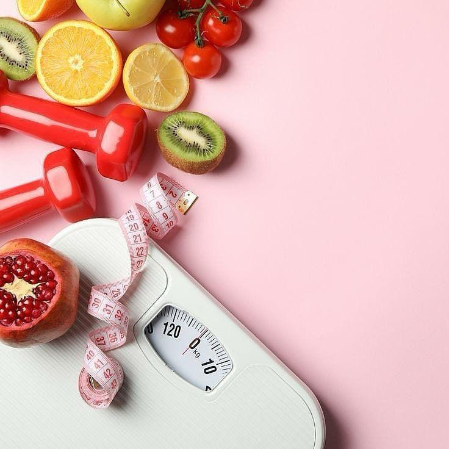

This project utilizes Python to explore and visualize key trends in gender disparities across South Africa, focusing on critical indicators such as education, employment, and health. The analysis provides valuable insights into the disparities between men and women in these areas, shedding light on areas of inequality and opportunity for improvement.


This project utilizes SQL to explore critical nutrition indicators in South Africa, with a focus on the nutritional status of adults and the prevalence of anemia in children, pregnant women, and non-pregnant women. The analysis examines the rates of overweight, underweight, and obesity, providing a deeper understanding of the country's public health challenges.
By analyzing these key metrics, the project highlights significant health disparities and trends, offering valuable insights that can guide policy development and public health interventions aimed at improving nutrition and overall well-being.

Explore a series of downloadable PDF versions of my Power BI dashboards, which provide in-depth analysis on key topics such as nutrition indicators and gender inequality. Each dashboard presents a detailed breakdown of data through visually engaging charts and graphs, making complex information easier to interpret and understand. These insights aim to shed light on important trends and disparities, supporting informed decision-making..

This project uses SQL to analyze a dataset on sexual violence, revealing key trends, patterns, and correlations. It explores different types of sexual violence, providing deeper insights into their prevalence, frequency, and characteristics. The analysis also investigates factors like the relationship between survivors and victims, along with identifying reported perpetrators. The goal of this project is to contribute valuable findings to the broader conversation on sexual violence, helping to inform policy and support prevention and victim assistance initiatives.